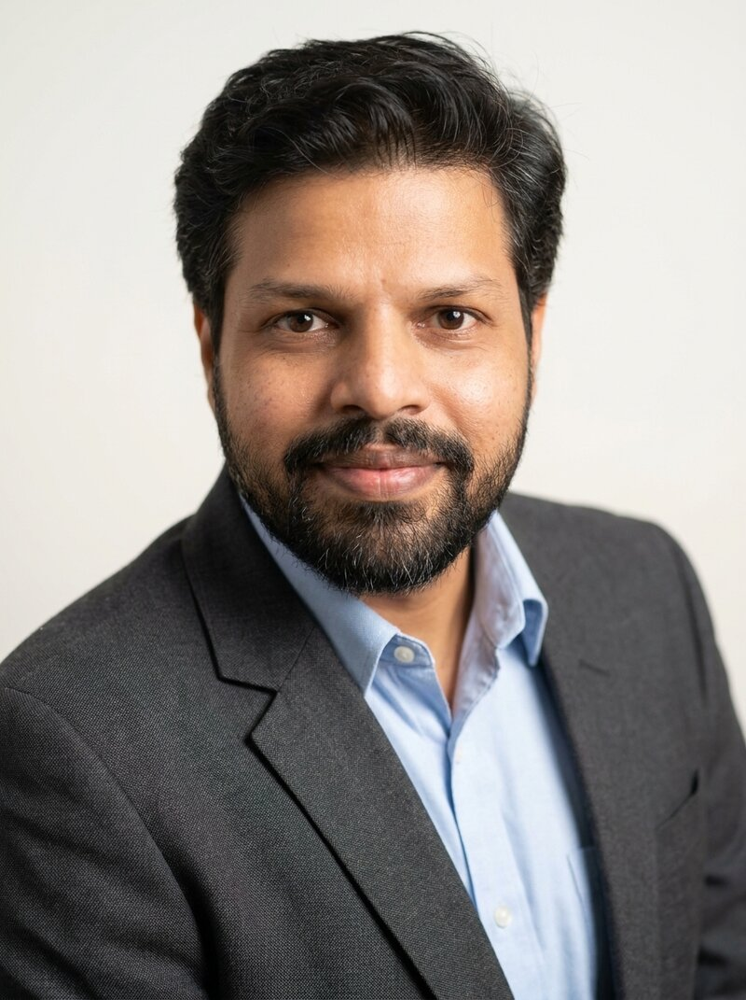

Fabrication
Cleanroom processing, photolithography, and thin-film deposition techniques.
- Photolithography (SUSS MJB4)
- E-beam Evaporation
- Plasma Etching (Nordson AP-300)
Department of Physics, NIT Calicut. Pioneering the next generation of flexible electronics through advanced semiconductor fabrication and precision characterization.

Currently investigating thin-film transport dynamics.
Lokesh Kumar is an experimental physicist dedicated to bridging the gap between fundamental semiconductor physics and scalable industrial applications. His work focuses on Organic Electrochemical Transistors (OECTs), oxide semiconductors (ZnO, IGZO), printed flexible neuromorphic devices, and bioelectronic sensors for environmental and health monitoring.
Currently serving as an Assistant Professor of Physics at NIT Calicut, he leads a multi-disciplinary team. His research career highlights include an IGSTC project collaboration with the Karlsruhe Institute of Technology (KIT), advancing sustainable manufacturing processes in microelectronics.
CORE COMPETENCIES & DOMAIN KNOWLEDGE
Cleanroom processing, photolithography, and thin-film deposition techniques.
Inkjet printing and roll-to-roll manufacturing for flexible substrates.
Advanced microscopic and spectroscopic analysis of materials.
Simulation, data modeling, and automated instrumentation control.
A chronological journey of academic excellence and research evolution.
Indian Institute of Technology, Bombay
Thesis: "Organic Electrochemical Transistors for Neuromorphic Devices and Sensors"
Indian Institute of Technology, Roorkee
1st Division. Project on 2D spin simulation in Python.
St. Stephen's College, Delhi University
1st Division.